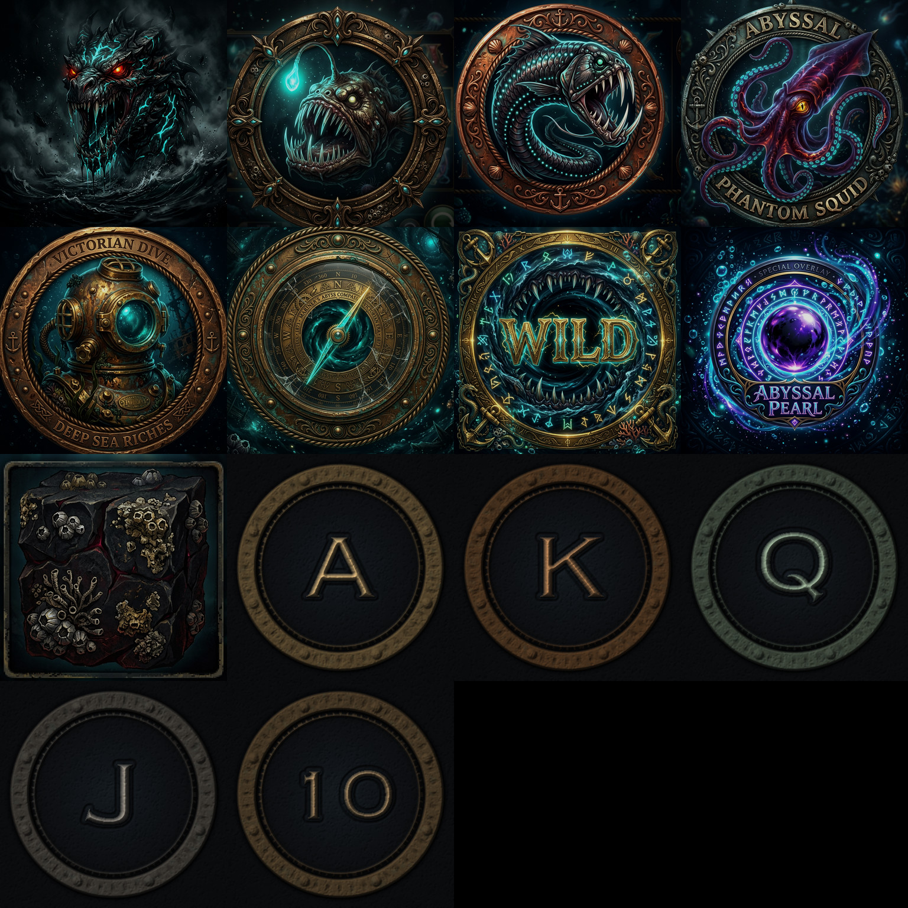
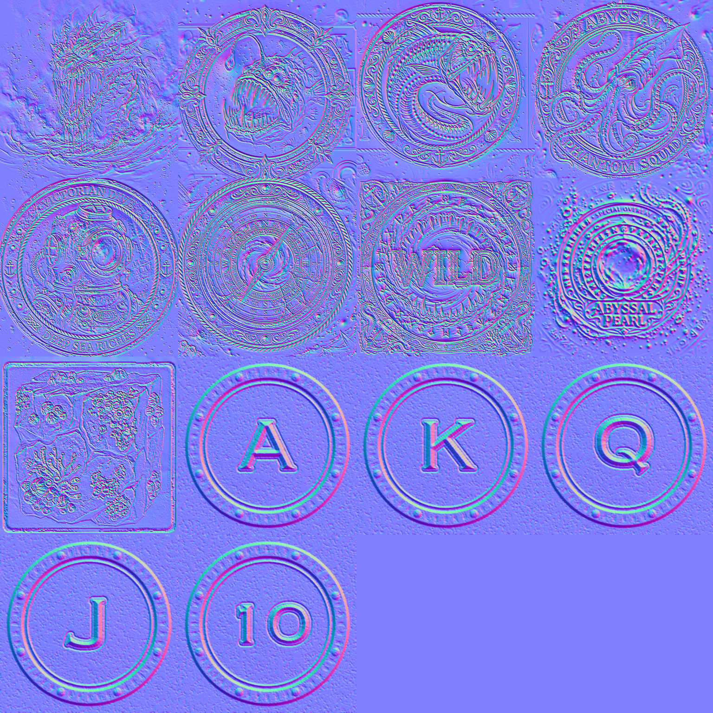
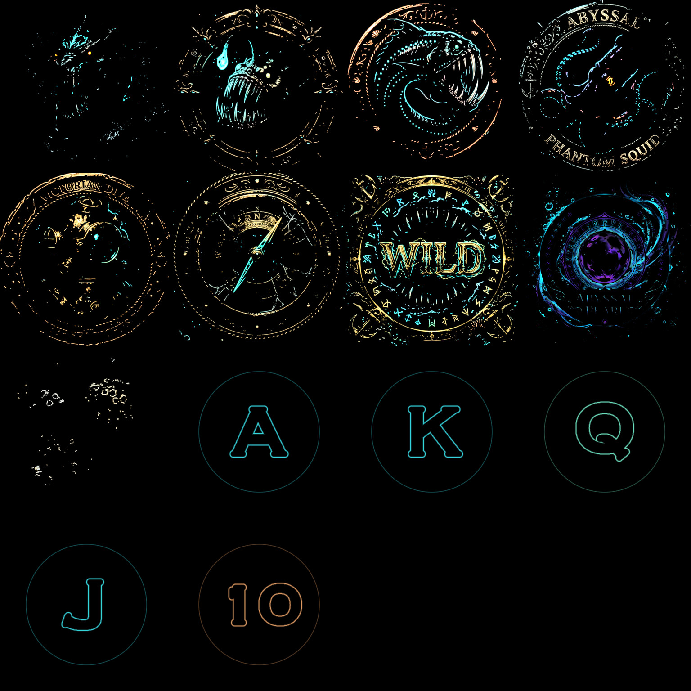
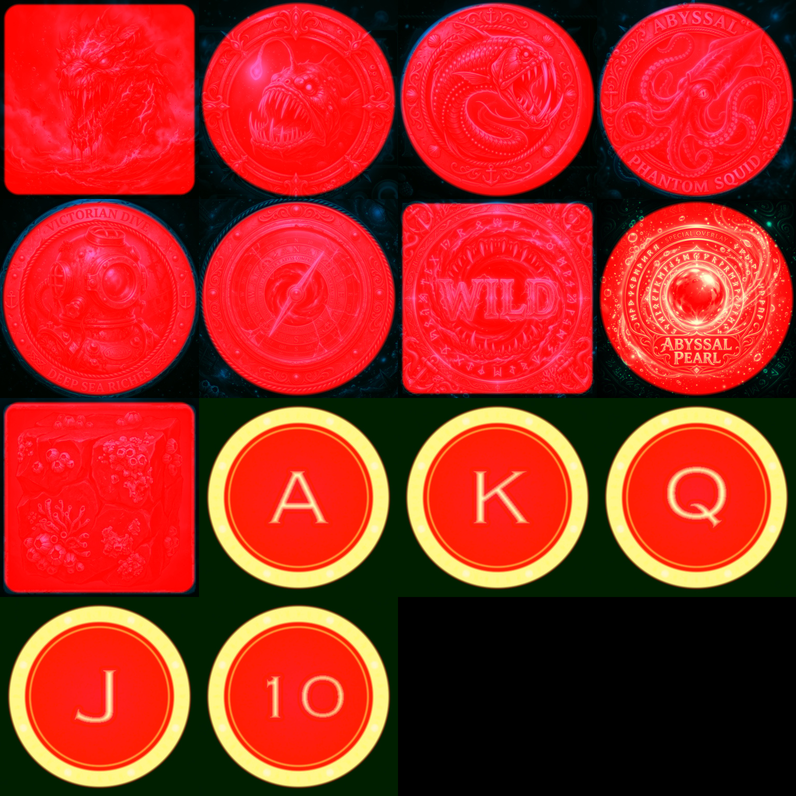

THE DESCENT
ABYSSAL LEVIATHAN
Director
L{{dl.n}}
LEVEL UP
STRIKE
VENTS
BIG WIN
UNDERTOW
{{depthStr}}
m
{{levelName}}
{{topChip}}
LEVIATHAN LIFELINE
{{strike.name}}
{{strike.blurb}}
REEL {{v.r}} · ×{{v.m}}




{{creatureName}}
{{gmultStr}}
{{depthStr}}
m
{{levelName}}
{{creatureName}}
{{gmultStr}}
DEPTH RECORD BREACHED
{{lu.meters}} M
{{lu.name}}
LEVEL {{lu.level}} OF 5 · {{lu.points}} PRESSURE POINTS
{{r.text}}
{{feat.kicker}}
{{feat.title}}
{{feat.sub}}
{{feat.detail}}
{{ut.title}}
{{ut.sub}}
{{bw.kicker}}
{{bw.title}}
{{bw.amount}}
{{bw.xStr}}
{{bw.hint}}
BONUS BUY
ABYSSAL EXPEDITIONS
BET {{betStr}} · BALANCE {{balanceStr}}
{{b.title}}
{{b.price}}
{{b.cost}}
{{b.desc}}
{{b.cta}}
CLOSE